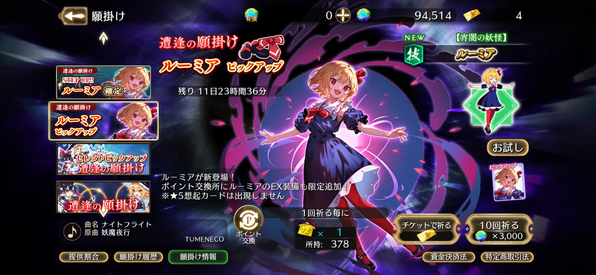
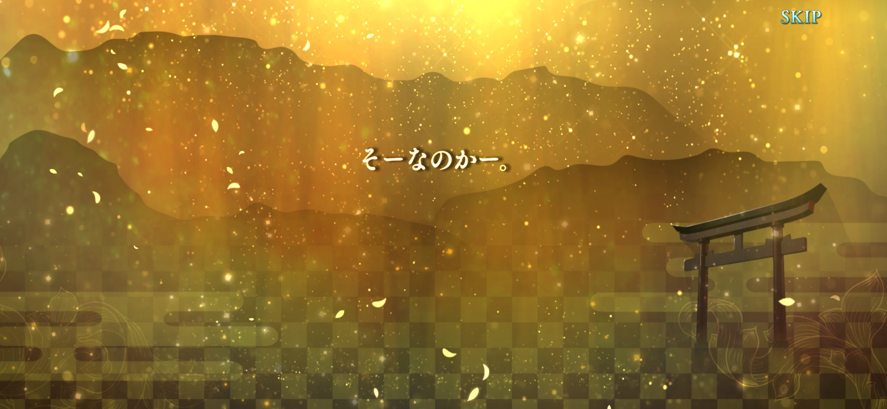
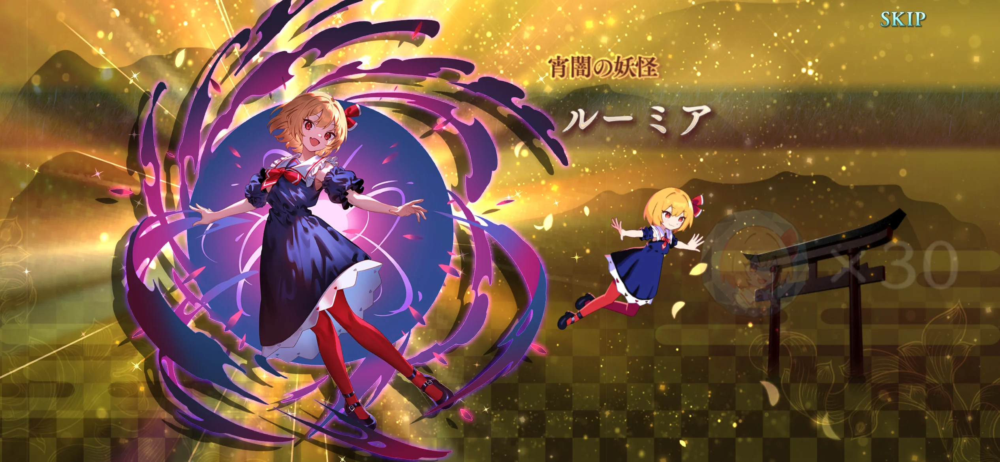
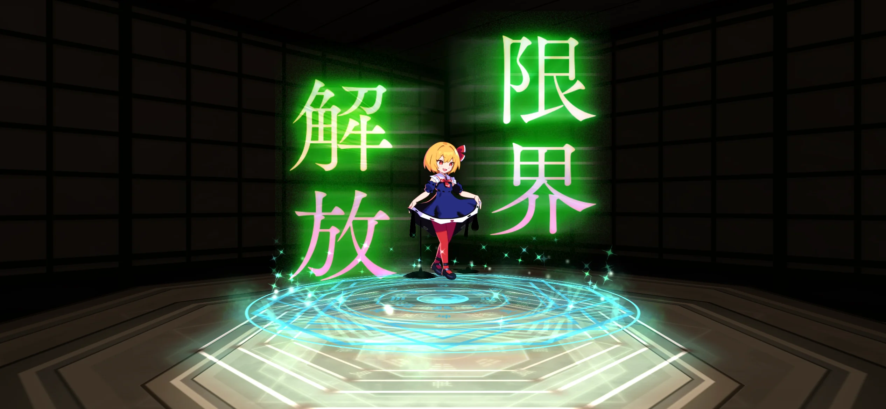
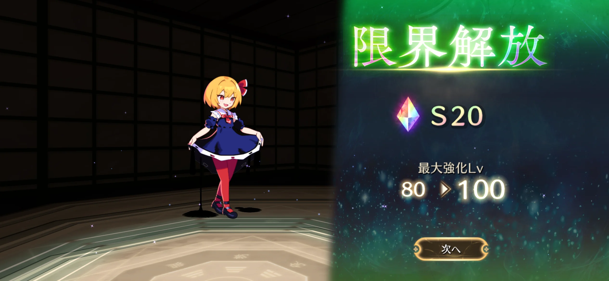
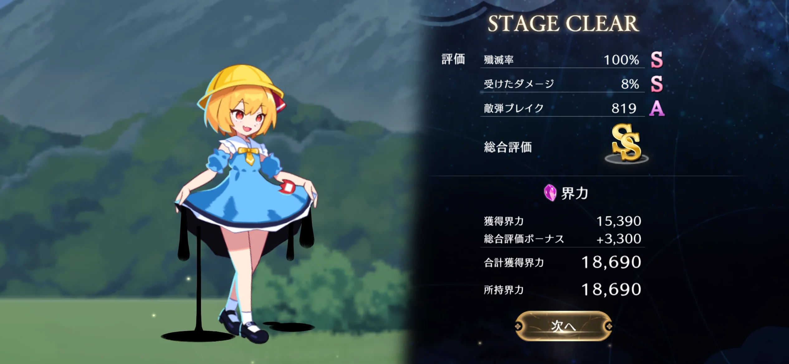
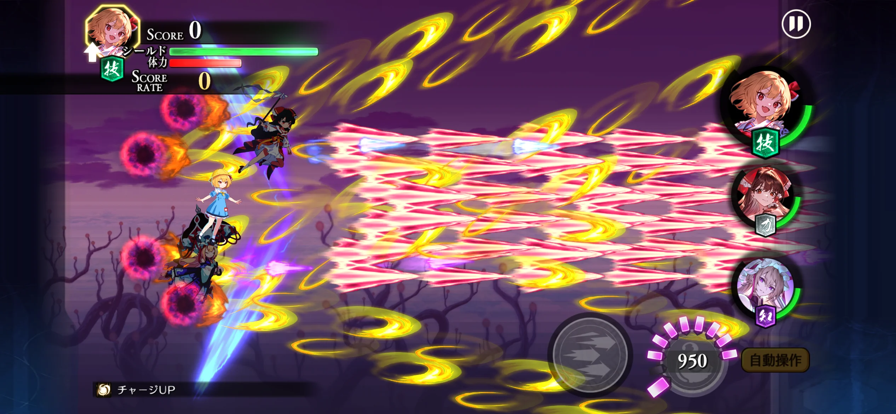
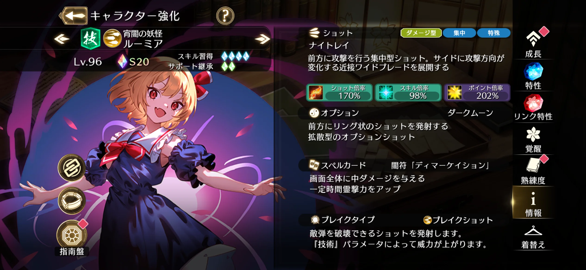
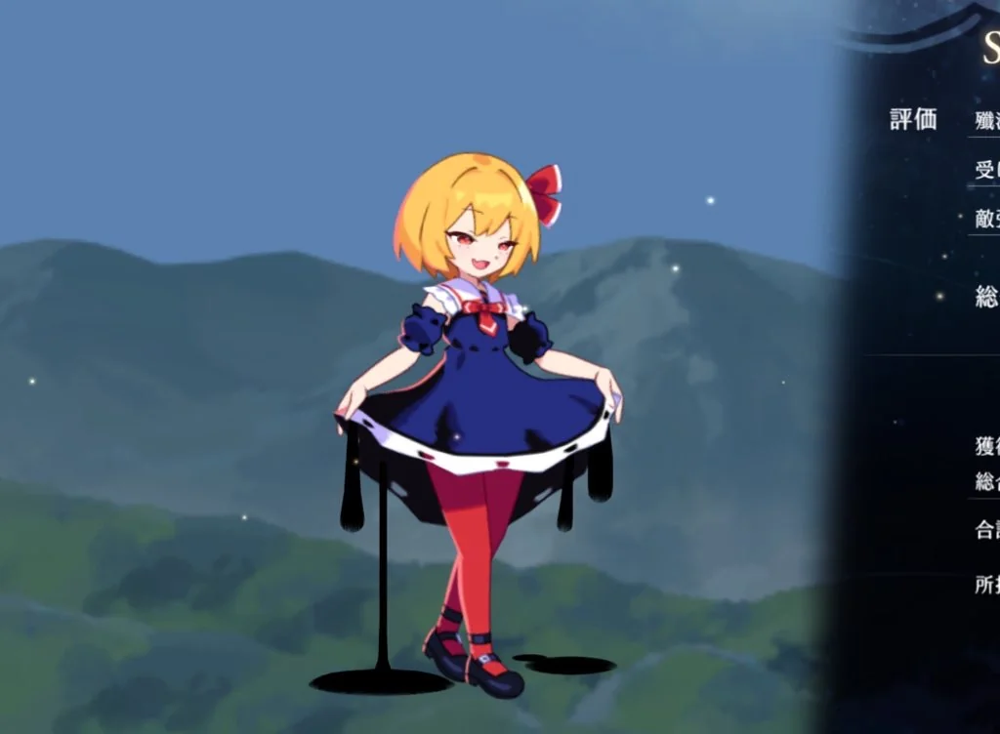

幻リプのルーミアがマジ熱い
幻リプにルーミアが実装！！
300 連引いた

リリースから約2年ずっとためていた石をここで解放だ～！周年でちょくちょく引いていたので、300連くらいしかなかったけど、天井分合わせれば完凸余裕。

ガチャメッセージが「そーなのかー」だけなのちょっとおもろい。

300 連で 自引３ルーミアでした。確率としては 300C3 * 0.0075^3 * 0.9925^297 = 0.20... なんで、20% の確率を引いたと考えれば結構運が良さそう。

ちゃんと限凸した。ルーミアのためなら石を貯められるな。

限界解放なる要素もアプデで追加されたらしいので、やってみる。実は 300 連引く過程で、うどんちゃんがなんと 3 回もすり抜けたので、その欠片素材で解放しちゃう。
実戦で使ってみる

↑幻想郷在住、人食い妖怪のルーミアさん（５さい）

実戦で使ってみた感じだと、ショットはシンプルな直線系で扱いやすい。なんかよくわからんビーム（ムーンライトレイ？）が後方に照射されてるけど、強いのかはよくわからなかった。サブオプは広範囲に拡散して雑魚狩りに強そう。

あとよくわからんが、界力が稼ぎやすかった。（気がする）どうやらルーミアの通常ショットの界力への変換倍率が高いっぽい？詳しいことは詳しい方に任せますわ。ライト勢なので。
いい顔してる

ルーミアってこういう小悪魔系の顔がめちゃ似合うと思ってる。かわいい。食べられたい。
関連記事